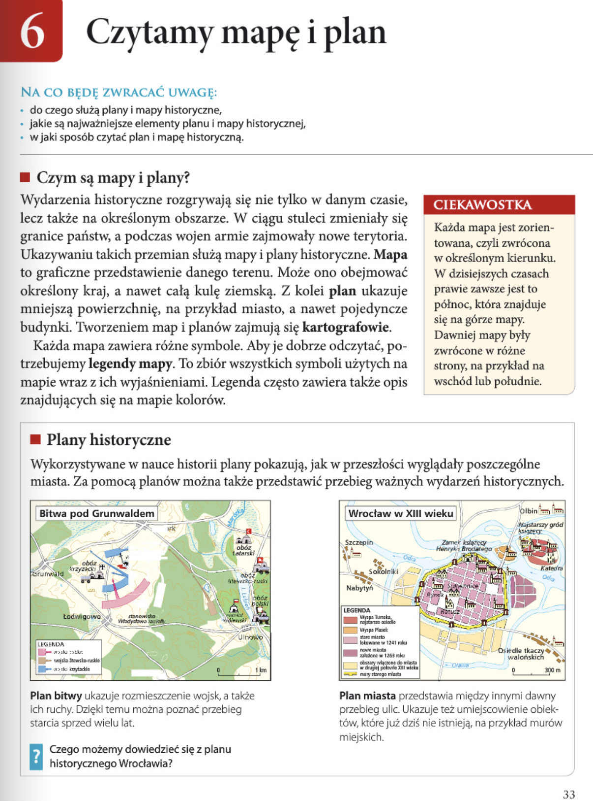
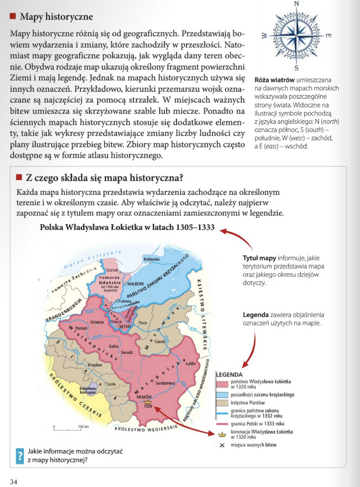
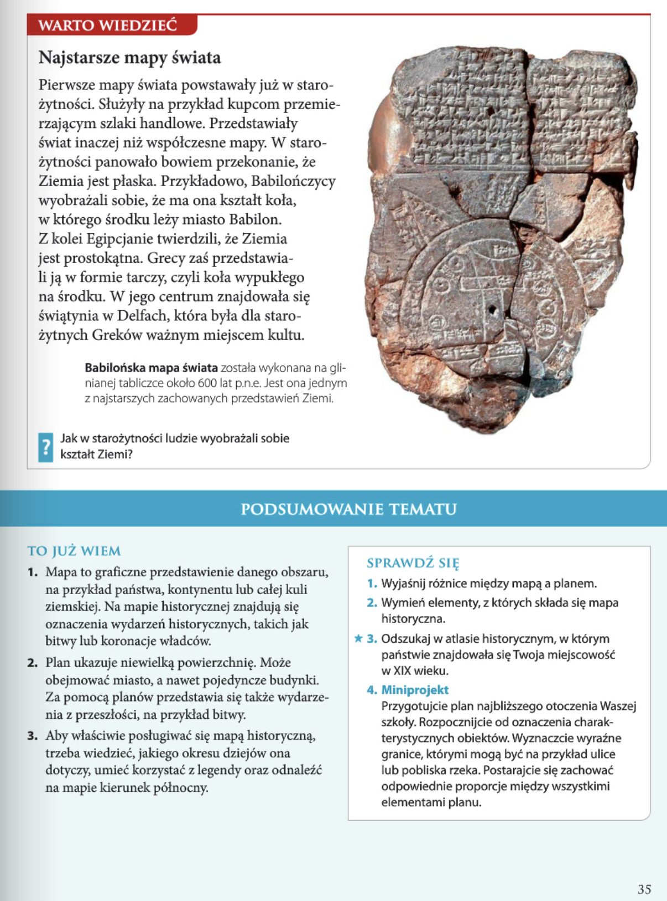

Historia
Rozdział I: Z historią na Ty
6. Czytamy mapę i plan
- podobieństwa i różnice między mapą a planem;
- znaczenie mapy w pracy historyka;
- odczytywanie informacji z planu i mapy historycznej;
- najstarsze mapy świata.
Zagadnienia
- do czego służą plany i mapy historyczne,
- jakie są najważniejsze elementy planu i mapy historycznej,
- w jaki sposób czytać plan i mapę historyczną.
NA CO BĘDĘ ZWRACAĆ UWAGĘ:
lekcja 6 - Czytamy mapę i plan >>
strona 33

Czym są mapy i plany?
Wydarzenia historyczne rozgrywają się nie tylko w danym czasie, lecz także na określonym obszarze. W ciągu stuleci zmieniały się granice państw, a podczas wojen armie zajmowały nowe terytoria. Ukazywaniu takich przemian służą mapy i plany historyczne. Mapa to graficzne przedstawienie danego terenu. Może ono obejmować określony kraj, a nawet całą kulę ziemską. Z kolei plan ukazuje mniejszą powierzchnię, na przykład miasto, a nawet pojedyncze budynki. Tworzeniem map i planów zajmują się kartografowie.
Każda mapa zawiera różne symbole. Aby je dobrze odczytać, potrzebujemy legendy mapy. To zbiór wszystkich symboli użytych na mapie wraz z ich wyjaśnieniami. Legenda często zawiera także opis znajdujących się na mapie kolorów.
CIEKAWOSTKA
Każda mapa jest zorientowana, czyli zwrócona w określonym kierunku. W dzisiejszych czasach prawie zawsze jest to północ, która znajduje się na górze mapy. Dawniej mapy były zwrócone w różne strony, na przykład na wschód lub południe.
Zadanie
Przyjrzyjcie się planowi historycznemu Wrocławia. Co możecie z niego wywnioskować?
Plan dostarcza informacji o budowie miasta – ukazuje przebieg ulic, linię murów oraz rozstawienie budynków w mieście. Ponadto widoczne są na niej również obrzeża Wrocławia oraz linie Odry.
strona 34
Mapy historyczne
Mapy historyczne róznią się od geograficznych. Przedstawiają bowiem wydarzenia i zmiany, które zachodziły w przeszłości. Natomiast mapy geograficzne pokazują, jak wygląda dany teren obecnie. Obydwa rodzaje map ukazują określony fragment powierzchni Ziemi i mają legendę. Jednak na mapach historycznych używa się innych oznaczeń. Przykładowo, kierunki przemarszu wojsk oznaczane są najczęściej za pomocą strzałek. W miejscach ważnych bitew umieszcza się skrzyżowane szable lub miecze. Ponadto na ściennych mapach historycznych stosuje się dodatkowe elementy, takie jak wykresy przedstawiające zmiany liczby ludności czy plany ilustrujące przebieg bitew. Zbiory map historycznych często dostępne są w formie atlasu historycznego.
Z czego składa się mapa historyczna?
Każda mapa historyczna przedstawia wydarzenia zachodzące na określonym terenie i w określonym czasie. Aby właściwie ja odczytać, należy najpierw zapoznać się z tytułem mapy oraz oznaczeniami zamieszczonymi w legendzie.
Zadanie
Czego możesz dowiedzieć się z mapy historycznej?
Mapy historyczne prezentują pewne wydarzenia mające miejsce na konkretnym terenie w określonym czasie.

strona 35

WARTO WIEDZIEĆ
Najstarsze mapy swiata
Pierwsze mapy świata powstawaly już w starożytności. Służyły na przykład kupcom przemierzającym szlaki handlowe. Przedstawiały świat inaczej niż współczesne mapy. W starożytności panowało bowiem przekonanie, że Ziemia jest płaska. Przykładowo, Babilończycy wyobrażali sobie, że ma ona kształt koła, w którego środku leży miasto Babilon. Z kolei Egipcjanie twierdzili, że Ziemia jest prostokątna. Grecy zaś przedstawiali ją w formie tarczy, czyli koła wypukłego na środku. W jego centrum znajdowała się świątynia w Delfach, która była dla starożytnych Greków ważnym miejscem kultu.
Zadanie
Powiedz, jak według starożytnych wyglądała nasza planeta.
W starożytności popularnym poglądem był ten, wedle którego Ziemia jest płaska, natomiast różnie wyobrażano sobie kształt owej płaszczyzny.
SPRAWDÉ SIE
Zadanie 1
Powiedz, czym różnią się mapa i plan.
Mapa jest graficznym przedstawieniem sporego obszaru (państwa, kontynentu, Ziemi), mogą tam być przedstawione wydarzenia historyczne, plan zaś obejmuje niewielki obszar, np. budynek lub miasto, i w historii raczej skupia się na pojedynczych wydarzeniach (np. przebieg bitwy).
Zadanie 2
Podaj elementy, które razem tworzą mapę historyczną.
Tytuł mapy, legenda oraz podziałka.
Zadanie 3
Używając atlasu historycznego, sprawdź, w którym państwie znajdowała się twoja miejscowość w XIX wieku.
Przykładowe rozwiązanie:
Kraków – Austria, Księstwo Warszawskie, Rzeczypospolita Krakowska.
Zadanie 4
Razem z resztą uczniów przygotuj plan otoczenia swojej szkoły. Zacznij od zaznaczenia charakterystycznych dla okolicy obiektów, następnie zaznacz takie elementy jak ulice i rzeka. Postaraj się zachować odpowiednie proporcje pomiędzy wszystkimi elementami, pojawiającymi się na planie.
Jest to praca stawiająca na pracę w grupie, więc nie mogę podać zadowalającego przykładowego rozwiązania.